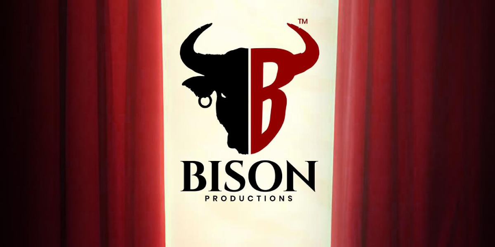
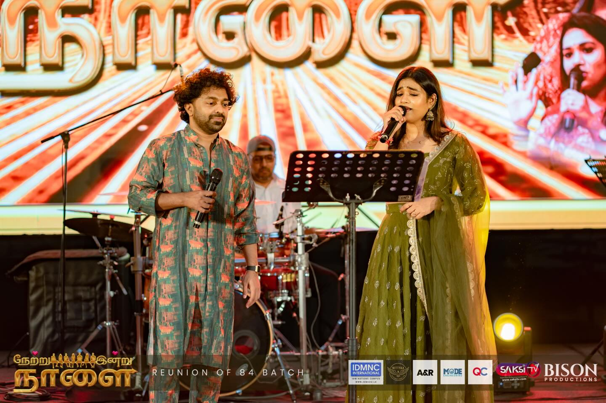
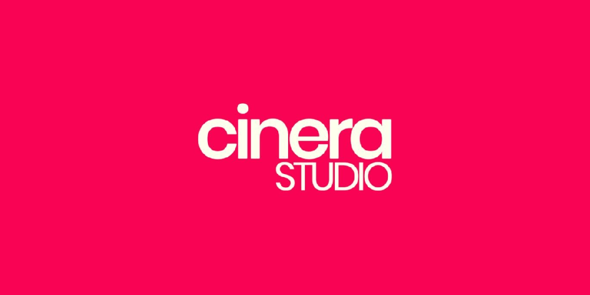
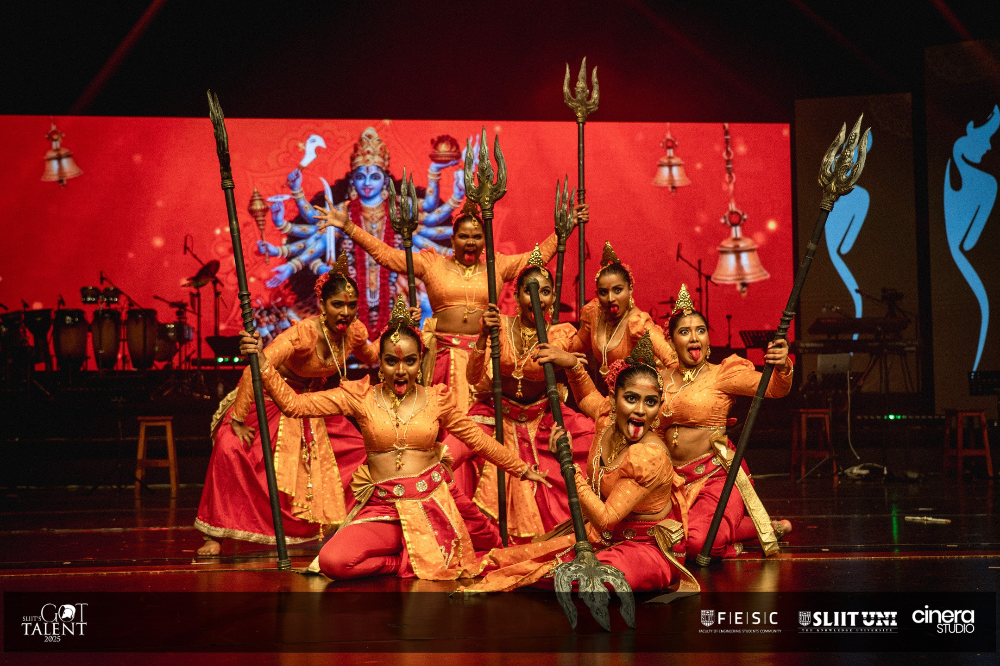
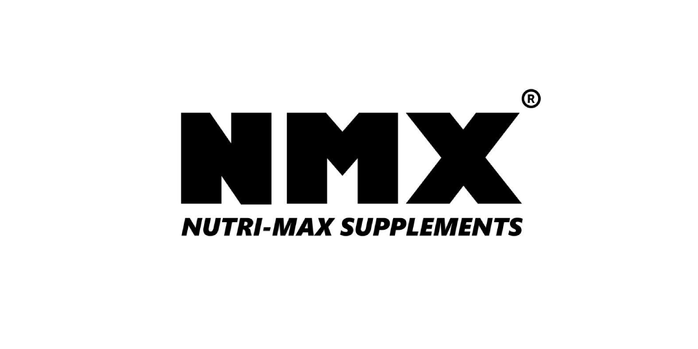
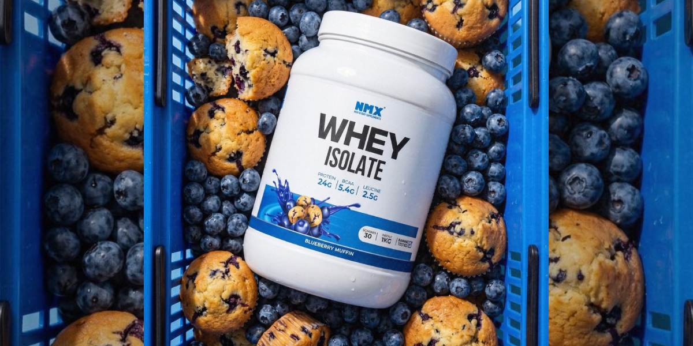

Three premium agency projects showcasing branding, photography, videography, and social media growth.
BISON Productions is a film production company focused on production, funding, and creative storytelling. We built its visual identity, managed its social media presence, and produced engaging video content to establish a strong digital brand.


We created a cohesive brand identity supported by consistent social media content and cinematic video production, helping BISON Productions build credibility and increase audience engagement.
CineraStudio.lk is a creative photography studio. We developed its brand identity and delivered professional photography with high-end editing to create a premium visual presence.


Our focus was creating a clean, professional visual style through branding, photography, and editing that reflects the studio's creative quality and strengthens its online presence.
Nutrimax.iso is a nutrition and wellness brand. We produced engaging promotional videos and platform-specific content designed to increase brand awareness and audience engagement.


We created engaging video content tailored for social media, helping the brand communicate its message more effectively and maintain a consistent online presence.